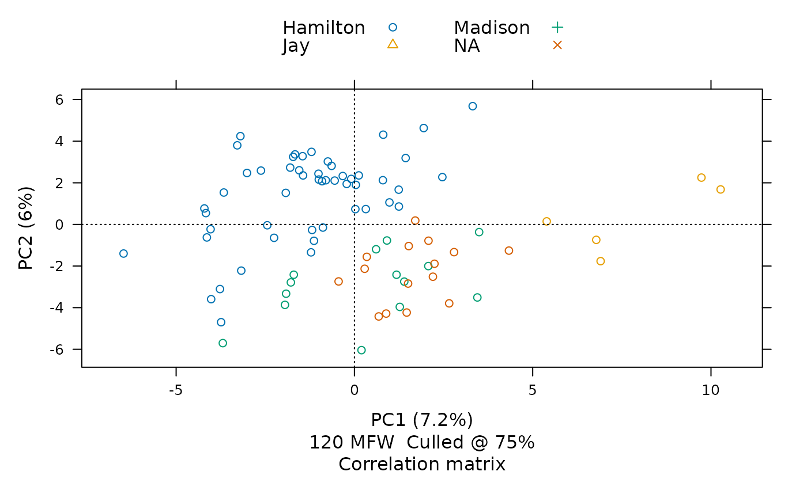
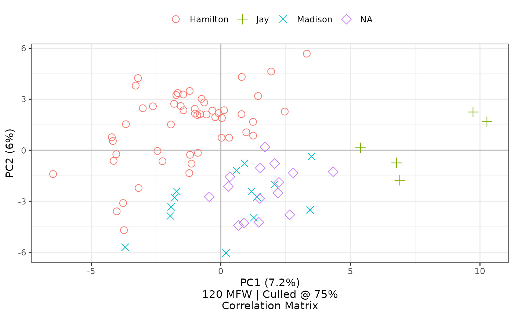
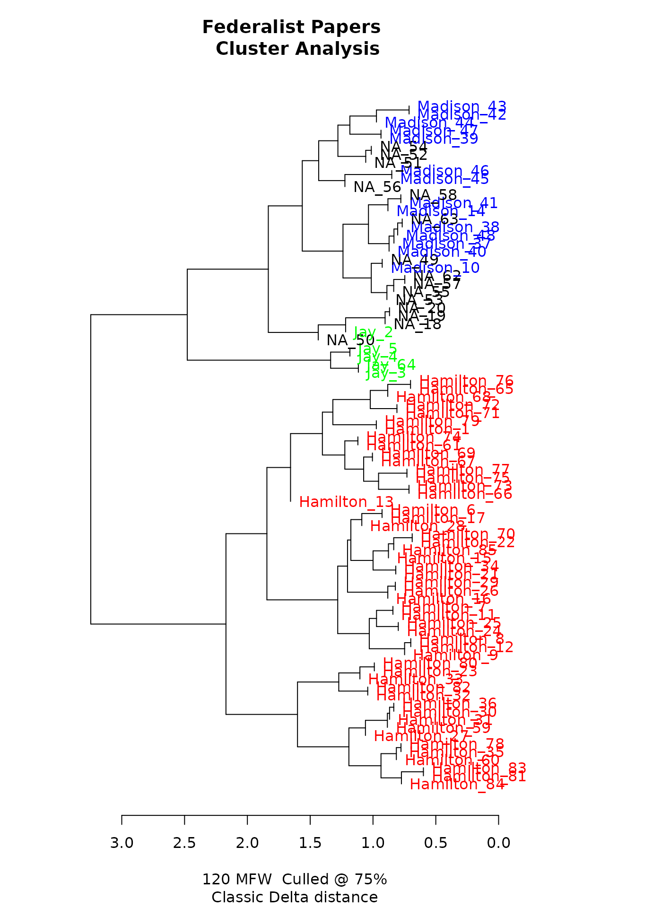
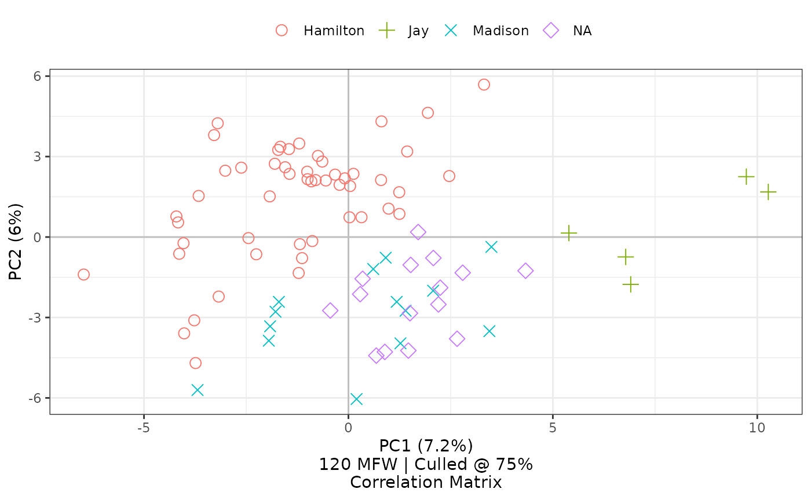
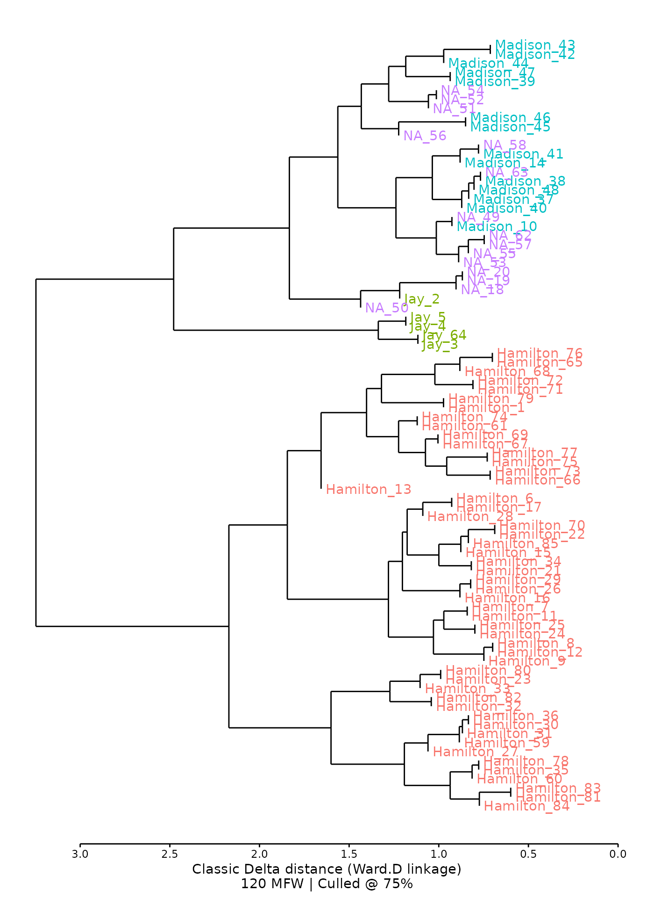

Once installed, stylo2gg will interface with data recorded by the stylo package. The examples below introduce functionality using the eighty-five Federalist Papers, originally published pseudonymously in 1788.
Principal component analysis
As called here, the stylo package limits words to those common to at
least 75% of the texts (using the culling... argumements),
saves the data in an object called federalist_mfw, and
plots the texts based on their word usage with principal component
analysis:
library(stylo)
federalist_mfw <-
stylo(gui = FALSE,
corpus.dir = system.file("extdata/federalist", package = "stylo2gg"),
analysis.type = "PCR",
pca.visual.flavour = "symbols",
analyzed.features = "w",
ngram.size = 1,
display.on.screen = TRUE,
sampling = "no.sampling",
culling.max = 75,
culling.min = 75,
mfw.min = 900,
mfw.max = 900)
This visualization places each part by its frequencies of 120 of the most frequent words<U+2014>chosen from among words appearing in at least three-fourths of all papers The chart shows that the texts whose authorship had once been in question, shown here with red Xs, have frequency distributions most similar to those by James Madison, shown here with green crosses.
By default, the stylo2gg() function uses both the data
and visualization settings from federalist_mfw:

Using selected ggplot2 defaults for shapes and colors, the
visualization created by stylo2gg nevertheless shows the
same patterns of style, presenting a figure drawn from the same
principal components. Here, the disputed papers are marked by purple
diamonds, and they seem closest in style to the parts known to be by
Madison, marked by blue Xs.
Other settings are explained in the article on principle component analysis.
Hierarchical clustering
In addition to two-dimensional relationships with principal components, stylo can also show a dendrogram for cluster analysis, showing texts’ relationships based on their distance to each other.
federalist_mfw2 <-
stylo(gui = FALSE,
corpus.dir = system.file("extdata/federalist", package = "stylo2gg"),
custom.graph.title = "Federalist Papers",
analysis.type = "CA",
analyzed.features = "w",
ngram.size = 1,
display.on.screen = TRUE,
sampling = "no.sampling",
culling.max = 75,
culling.min = 75,
mfw.min = 900,
mfw.max = 900)#> Warning in restoreRecordedPlot(x, reloadPkgs): snapshot recorded in different R
#> version (4.3.1)
Dendrogram of hierarchical clusters, prepared by stylo.
This federalist_mfw2 object can then be piped into
stylo2gg():
federalist_mfw2 |>
stylo2gg()
#> Warning: The `size` argument of `element_line()` is deprecated as of ggplot2 3.4.0.
#> i Please use the `linewidth` argument instead.
#> i The deprecated feature was likely used in the stylo2gg package.
#> Please report the issue at <https://github.com/jmclawson/stylo2gg/issues>.
#> This warning is displayed once every 8 hours.
#> Call `lifecycle::last_lifecycle_warnings()` to see where this warning was
#> generated.
As with principal components analysis, stylo2gg() function
defaults will recreate the chart made by stylo().
Alternatively, using the unnumbered federalist_mfw
object from earlier will create a similar cluster analysis using the
option viz="CA":
federalist_mfw |>
stylo2gg(viz="CA",
shapes = FALSE)
Function arguments simplify exploration without necessitating additional
calls to stylo().
Additional settings for visualizing clusters with dendrograms are explained in the article on hierarchical clustering.